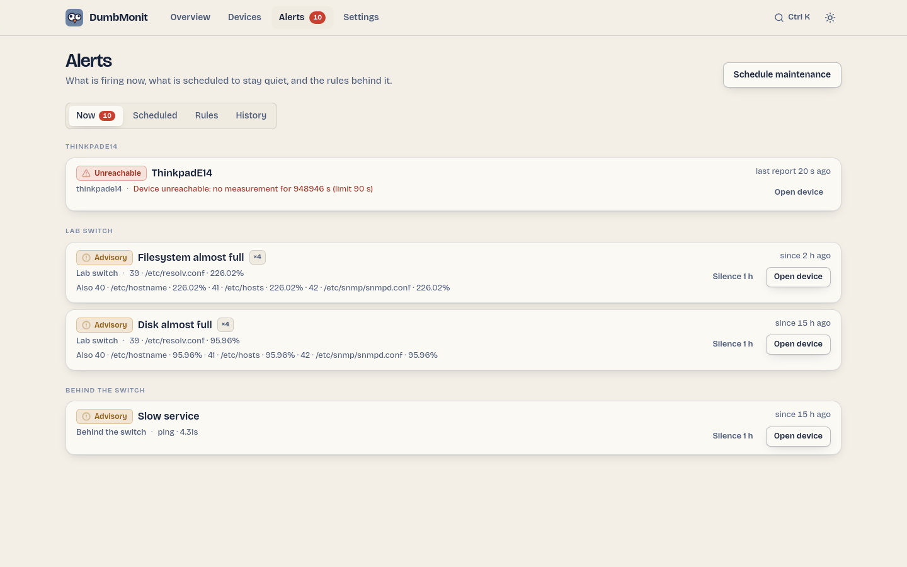

How alerting works¶
Useful rules are active right after install; nothing needs tuning. What makes the difference in daily use is what keeps the noise down: dependency suppression, grouping by host, maintenance windows, and a baseline that learns before it speaks.

Severities¶
The interface speaks the weather bulletin's ladder. The API and the rule editor store the same three levels under their engine names.
| In the UI | In the API (severity) |
Meaning |
|---|---|---|
| Info | info |
Worth knowing, no action expected. Used by the baseline rule. |
| Advisory | warning |
Needs attention soon: CPU high, disk almost full, slow service. |
| Warning | critical |
Needs you now: device unreachable, service down, backup verification failed, certificate expired. |
Escalation raises a rule's severity one rung after escalate_after if the
alert keeps firing (Info → Advisory → Warning; Warning stays).
Phases¶
Every alert is a state machine, evaluated every 30 seconds
(DUMBMONIT_ALERT_INTERVAL_SECS).
| Phase | In the UI | Meaning |
|---|---|---|
ok |
— | The condition is false. |
pending |
Building up | The condition is true but the rule's hold (for) has not elapsed yet. Nothing is sent. |
firing |
Firing | The condition has held long enough. The first notification goes out, then reminders every repeat_interval (6 hours by default for most built-in rules), then an escalation if configured. |
resolved |
Resolved | Back to normal. A resolution notification is sent only if the firing had been announced. |
suppressed |
Suppressed by parent | The alert is firing, but a parent device is unreachable: see below. |
phase is the engine's state; effective_phase is what you read. An alert
whose effective_phase is suppressed keeps phase = firing underneath, so it
is not notified again when the parent recovers.
Dependency suppression¶
Any device can declare a parent device. When a device is unreachable
(the "Device unreachable" rule fires on it), every alert on its descendants is
marked Suppressed by parent instead of being sent: a switch going down
produces one notification, not thirty. The nearest unreachable ancestor is
named as the cause (suppressed_by), and the chain is followed up to 64
levels.
Set the parent on the device form. On the Devices page, children stack under their parent and dim when it is unreachable.
Grouping, deduplication, reminders¶
Without grouping, a NAS whose RAID degrades would send one message per disk,
per cycle. DumbMonit sends at most one message per host and per cycle, even if
it contains five lines. Each alert is notified once when it starts firing
(firing), then only as a reminder (reminder, every repeat_interval), an
escalation (escalation) or a resolution (resolved). The alert history
records every transition with whether it was notified and, if not, why
(learning, suppressed, silenced).
Maintenance windows¶
A silence stops notifications without stopping evaluation: at the end of a window, an alert that is still active is notified once, rather than "born" after two hours of existence. Windows are one-off or weekly, per device or for the whole instance. See Maintenance windows.
Baseline learning¶
The "Unusual CPU" rule needs no threshold. For every series it keeps 168
buckets, one per (day of week, hour), and compares each point to what is
usually observed at that moment. The score is robust (median and MAD, an
EWMA per bucket with alpha = 0.05), so a single incident does not rewrite the
baseline, and seasonal drifts are followed.
The rule stays silent for its first fourteen days of learning: each bucket must have been seen at least twice to tell "unusual" from "never observed". In the meantime it is shown with a learning flag and only tells you what it would have fired. Baselines of series that disappeared are forgotten after 60 days.
Forecasts¶
Two kinds of alert predict rather than report, and the overview lists them
under Forecasts: the baseline anomaly, and the predict rules that
extrapolate a series with predict_linear() on the VictoriaMetrics side
("Filesystem almost full" within four days). The PBS datastore estimate is a
plain threshold on PBS's own forecast.
Where notifications go¶
Built-in rules have no channel attached, which means every enabled channel. A rule you edit can name specific channels. Channels are configured in Settings → Notifications; see Notification channels.
Smart notifications¶
Everything above decides whether an alert may speak. A second stage, the notification policy, decides when and on which channel, so that nobody gets spammed. The full path of one alert, in order:
- Evaluate — threshold, anomaly score or forecast, with the rule's
hold (
for) and, when set, its clear threshold (hysteresis: fire above 90 %, clear only under 85 %) and any per-device override. - Deduplicate — one fingerprint per (rule, series); a series that resolves to the same key twice yields one alert.
- Suppress by dependency — descendants of an unreachable device stay quiet.
- Silence — maintenance windows mute what they cover.
- Group by device — one message per device per cycle, reminders and escalation folded in.
- Flap hold — a fingerprint that fires and clears 4 times in 30 minutes sends a single "flapping" notice, then nothing for 30 minutes.
- Per-channel filters — minimum severity, "tell me when it clears" on/off, and a minimum interval between two messages about the same alert.
- Quiet hours (per channel) — only Warning-level alerts come through; the rest waits for a digest when quiet hours end (an alert that clears meanwhile is only mentioned as "resolved during quiet hours").
- Batching — alerts within the batch window (60 s by default) leave as one message per channel: "3 alerts on 2 devices, 1 resolved".
- Hourly cap — past
max_per_hourmessages on a channel, alerts wait and arrive as one digest ("…and 7 more alerts"). - Send — with an "Open in DumbMonit" link per device when a public URL is known.
Steps 6 to 10 are configured in Settings → Notification policy (global) and on each channel (Delivery options). See Notification policy.